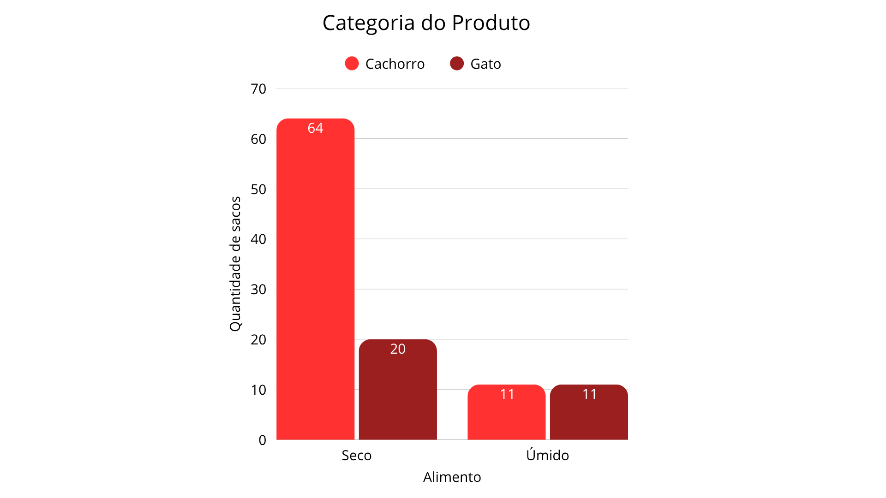
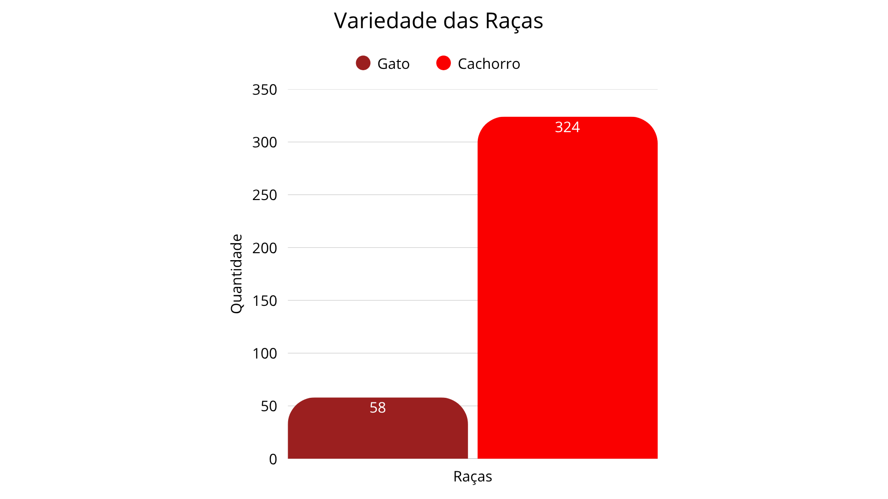
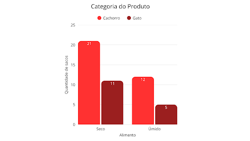

Gráficos de Comparação

Gráfico 1 - O Gráfico apresenta uma comparação da quantidade de Alimentos Secos (sacos tradicionais) e Alimentos Úmidos (sachê ou lata) entre os Cães e Gatos. Sendo a linha dos Cães em Alimento Seco que possui mais variedade produzida.

Gráfico 2 - O Gráfico apresenta uma comparação da quantidade de Raças entre os Cães e Gatos. Sendo a linha dos Cães que possui mais variedade.
Gráficos de Comparação Vet

Gráfico 1 - O Gráfico apresenta uma comparação da quantidade de Alimentos Secos (sacos tradicionais) e Alimentos Úmidos (sachê ou lata) da linha Veterinária entre os Cães e Gatos. Sendo a linha dos Cães que possui mais variedade produzida.